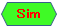

- 調査したい日本語の専門用語（フレーズ）を入れて「実行」ボタンをクリック！
- CiNii Research 等から調べた「関連学術用語」と、それをキーワードにした 東京大学OPAC・雑誌記事索引（国会図書館サーチ）リンクを提示します。
- 入力のフレーズが最新の日本語シソーラス（日本語WordNet 2.1）にマッチした場合、その情報（類義語・関連語・上位語・下位語）も提示します。
- 抽出した関連語にシソーラスの登録語があった場合、「類似語」アイコン

も表示します（マウスを乗せると類義語を表示）。
学術情報を取得しています...